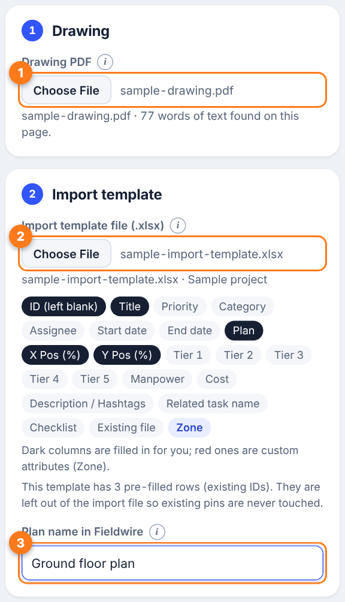
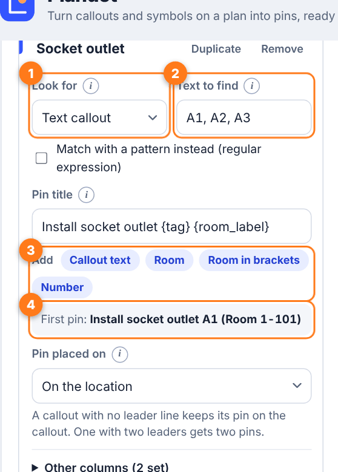
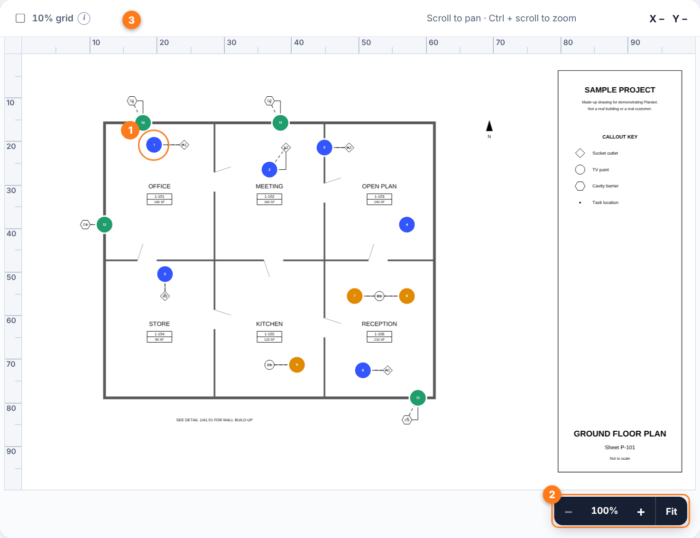
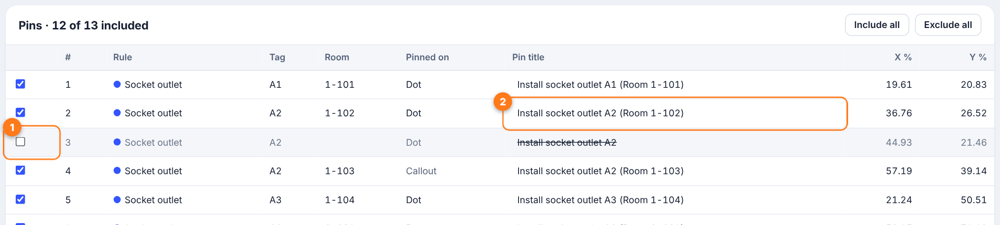
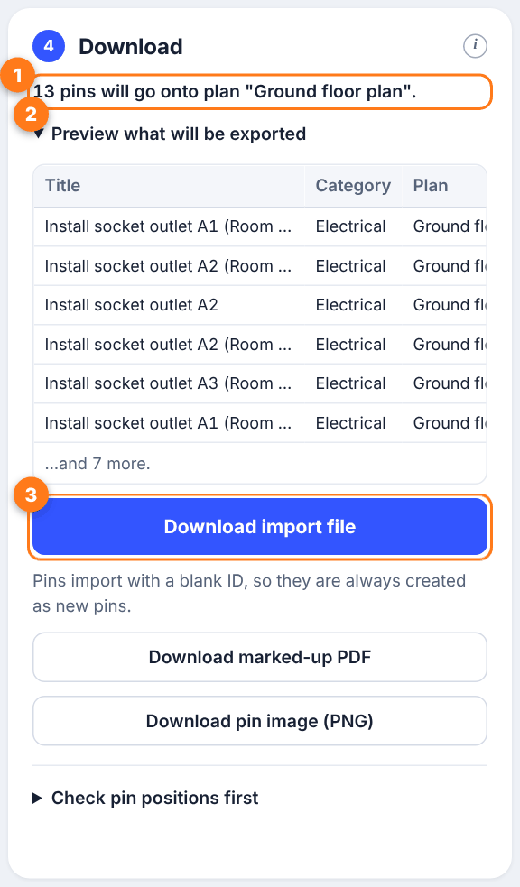
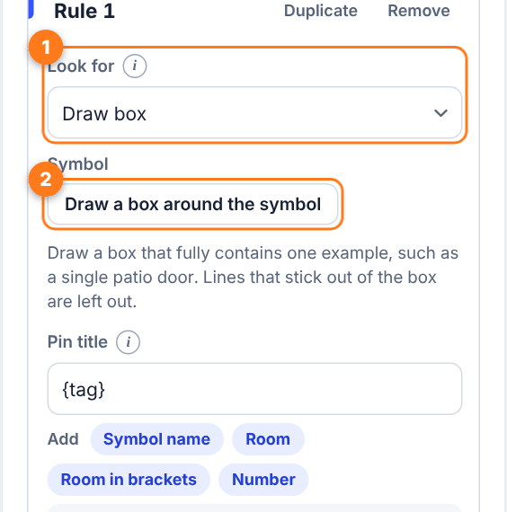
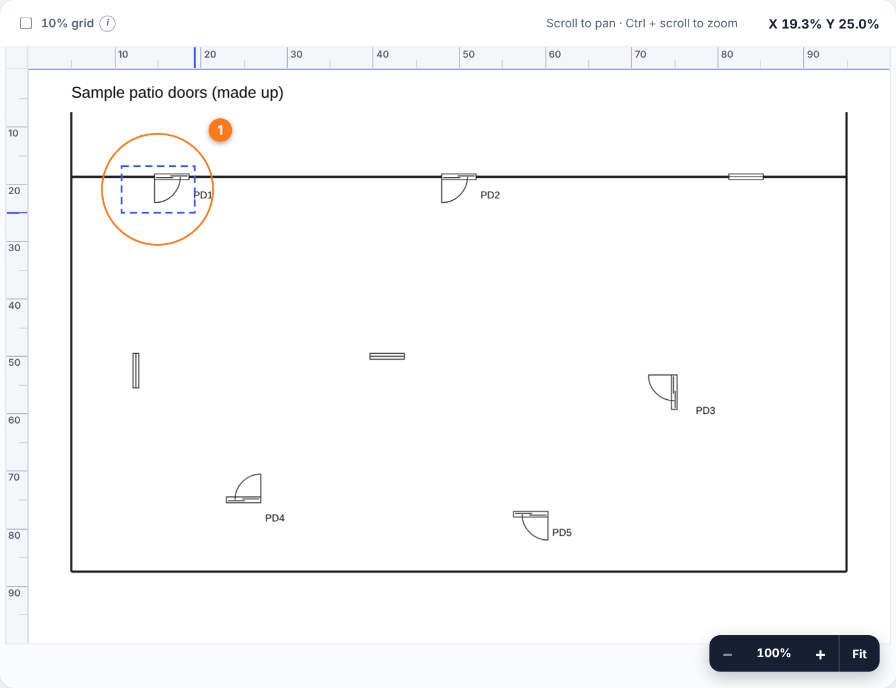
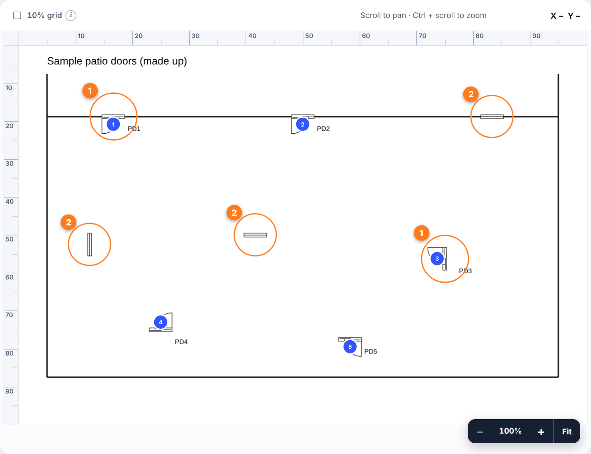
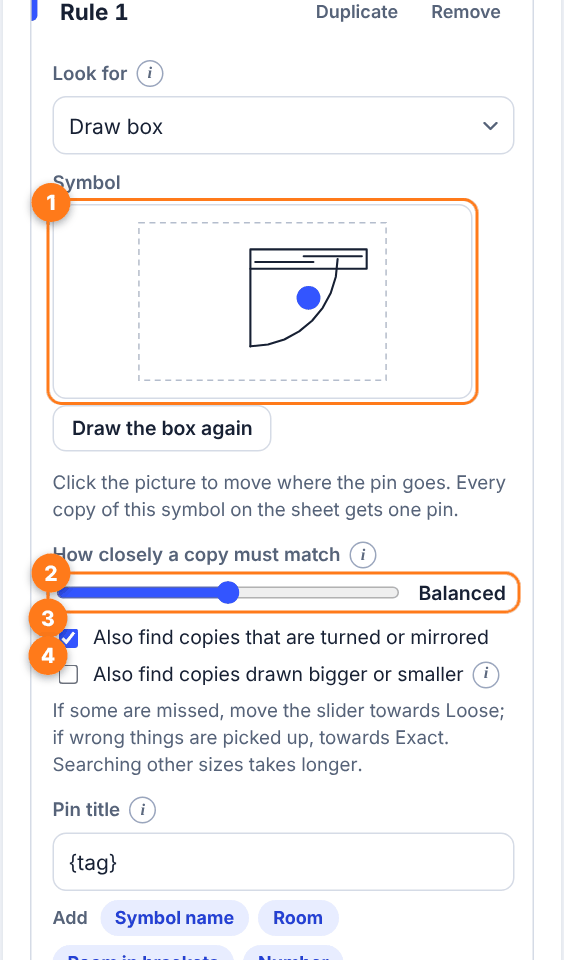

How to guide
Plandot reads the drawing PDF you already have, finds the callouts and symbols you ask for, and makes an import file with a pin for each one. It takes about five minutes the first time.
Want to see it work first? Open Plandot and press Try with a sample drawing. It loads a made-up drawing and some rules, and nothing is uploaded.
- 1 Load your files
- 2 Make a rule
- 3 Check the sheet
- 4 Fix or skip pins
- 5 Download
- Finding symbols
- Reuse your setup
- Keyboard
1 Load your files
- Drawing PDF. Choose the PDF for one sheet. It must be exported from your design software with the text kept as text. A scan or a photo won't work. You can also drag the file onto the page.
- Import template. Download the blank import spreadsheet from your project in Fieldwire and choose it here. Plandot fills it in, so your own columns carry across. Load a fresh copy if your custom columns change.
- Plan name. Type the plan's name exactly as it appears in the Fieldwire project, so the pins land on the right plan.
Does the PDF have several pages? Pick the page from the list. Each page is its own plan, so you export one page at a time.

2 Make a rule
A rule says what to look for and what to call each pin. One rule can find many callouts.
- Look for. Choose Text callout to find words on the drawing, such as door or socket tags.
- Text to find. Type the exact text, for example
A1, A2, A3. Separate several with commas. Tick the pattern box if you would rather match a pattern such asA[1-3]. - Pin title. Type a title, then press the blue buttons to drop in the callout text, the nearest room or a running number. For example
Install socket outlet {tag} {room_label}. - Check the example. The line underneath shows the title of the first pin the rule found.
Under Pin placed on, choose whether the pin sits where the leader line points (On the location) or on the callout text itself.
Use Add rule for another kind of callout. Each rule gets its own pin colour. Press Undo if you change your mind.

3 Check the sheet
Pins appear on the drawing as soon as a rule finds something. Scroll to pan. Hold Ctrl (or ⌘) and scroll to zoom in on the pointer, or use the +, − and Fit buttons. Turn on the 10% grid to judge positions. The rulers along the edges show the same percentages that go into the import file.

4 Fix or skip pins
Under the sheet, the pin list shows every pin. Untick a pin to leave it out, or edit its title in place. Include all and Exclude all do what they say.

To ignore a keynote list or the title block, open Search area and room labels and draw an area, so only that part of the sheet is searched.
5 Download
- Read the summary to see how many pins will go onto which plan.
- Open the preview to see the first few rows exactly as they will be in the file.
- Download import file, then import it into your Fieldwire project.
Pins are always added as new items with a blank ID, so nothing already in your project is changed. Fieldwire takes up to 500 pins per import. If there are more, Plandot tells you how many imports you need, for example 1,200 pins means 3 imports, and downloads that many files. Import them one after another.
The marked-up PDF and the pin image are handy for checking or sharing before you import. For a first run on a new kind of drawing, try Check pin positions first: it makes nine test pins on the 10%, 50% and 90% lines so you can confirm they land where you expect.
Always check the pins before importing. Plandot is a time saver, not a guarantee.

Finding symbols
Some things on a drawing have no text, such as a patio door or a fire extinguisher symbol. Plandot can find those too. Here it is with a made-up drawing of patio doors (samples/sample-symbols.pdf, included with the project). Five doors are drawn, some turned, mirrored or upside down, along with three windows that look a little like them.
1. Choose Draw box
Load the drawing, then in a rule change Look for to Draw box and press Draw a box around the symbol.

2. Box one example
Drag a box on the sheet that fully contains one door. Lines that stick out of the box, such as the wall behind the door, are left out. Choose a clean example with nothing else inside the box.

3. Every copy gets a pin
Plandot looks for the same shape everywhere on the sheet. It finds all five doors, including the turned, mirrored and upside-down ones, and leaves the windows alone.

4. Tune the match
After you box the symbol, the rule shows a picture of it. Click the picture to move where the pin goes on the symbol.
- If copies are missed, slide How closely a copy must match towards Loose. If wrong things are picked up, slide it towards Exact.
- Also find copies that are turned or mirrored is on by default.
- Tick Also find copies drawn bigger or smaller when the same symbol appears at different sizes. That search takes longer, and a progress bar shows while it runs.
Symbol finding reads the drawn lines, so it needs a PDF exported from CAD or Revit, not a scan.

Reuse your setup
Save setup makes a small file with your rules, plan name and room settings. Open setup loads it again on the next drawing, so you only build the rules once. You can share a setup file with a colleague or customer. It doesn't contain any drawing.
Keyboard
- + − zoom in and out, 0 fits the sheet, with the drawing focused.
- Ctrl/⌘ + Z undoes the last rule change, add Shift to redo.
- To draw a box without a mouse, focus the drawing, move with the arrow keys (hold Shift or Alt to change the step), press Enter for each corner and Esc to cancel.
- Press the small (i) next to a field for a one-line explanation.
Something not working? See the FAQ.